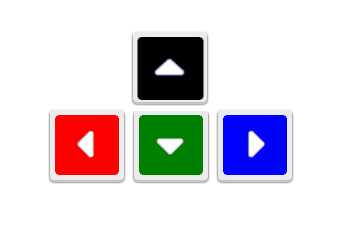

In this round, you will see Xs for which you have to decide as quickly and as accurately as possible whether their color corresponds to the left, up, down, or right arrow key. Indicate your response by pressing the corresponding key as explained below.
|
 |
If you have any questions, ask the study coordinator now.
If you are ready to begin, you can start the task by pressing the right arrow key on your keyboard.
You can exit the task at any time by pressing the escape key.